Virtua Fighter 5 FS コスプレ：イロモノ 編
先日の VF5FS コスプレの三つの記事のあと、全キャラの衣装を調べるべく、とにかく全キャラに一つずつ「コスプレ」を作ってみることにした。VF5FS の「コスプレ」は、他のゲーム(後述)の「キャラクリ」と違い、自由度が少ないが、限られたコスチュームで自分が気に入るコーディネイトをした結果、何かのテーマやキャラが見えてくるのが楽しい。 今回は、そうやって「コスプレ」させたのをテーマごとに《リリアン女学園 編２》《イロモノ 編》《懐かしのスター 編》としてまとめ、紹介する。この記事は《イロモノ 編》でどちらかというと先の《七曜 編》に近い「コスプレ」を扱う。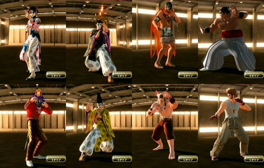
なお、この記事のリード部分は各編でも同じなので、すでに読んだ方は次の節まで読み飛ばしてくださればよい。 『Virtua Fighter 5 Final Showdown』(バーチャファイター５ファイナルショーダウン、略して VF5FS) は、元はアーケードゲームだったのが、Xbox 360 または PlayStation 3 に移植されたもので、ダウンロードで購入できる。 さらに追加コスチュームを買うことでキャラの衣装を変えられるようになる。各キャラごとにコスチュームが売っているが、複数のキャラがセットになったものが２セットあり、その２セットを変えばすべのキャラの衣装が揃う。 私は前作の『Virtua Fighter 5 Live Arena』(以下 VF5LA と略す)もダウンロード購入していたが、そちらは衣装は各キャラで攻略をしてはじめて手に入るものだった。ところが、今作 VF5FS のダウンロード版では、キャラのコスチュームセットを買えば、いきなりすべての衣装が使える。 だから、「コスプレ」目的ならば、ダウンロード購入時に一気に複数キャラのアイテムセットのその１とその２を揃えてしまえば、幸か不幸か最初に出たアイテムセット以来、新しいコスチュームの追加はないので、すべての衣装を制限なく使えることになる。(CG の動きのはげしさを避けるためらしい制限はある。)今なら全部で 3600 MSP (PS3 だと4500円)。オススメ。 (「コスプレ」のこのゲーム内での正しい呼称は「アイテムカスタマイズ」らしい。Terminal メニューから入る。) なお、『Virtua Fighter 2』が好きだったオールドファンの中には「バーチャ」が、3や 4 になってどんどん操作や概念が難しくなることに付いていけなくなった方もいるかもしれない。(私もそうだった。)でも、この 5 のシステムは、あえて操作を単純化する方向が出されているようで、ファンの多かった VF2 のグラフィックを極限まで美化した「だけ」に留めたといった感がある。ロートル格闘ゲーマーにもオススメである。 この先、コスプレデータの「レシピ」すなわち使った衣装名等も公開するが、言及のない身体部位はアイテムを使っておらず、省略した。 ■七曜の続きとして 私の中では「偶然」に、七曜に「ハレー彗星」的コスプレを混ぜてしまった。それは、七曜の「祭式」において、ゲストとして出てくる遠い国からの使者のような感じだろうか。 同様な感じで、「祭式」に出てきそうな「イロモノ」コスプレを集めてみた。最初から「祭式」用と考えたようなのもあるし、できちゃったキャラを便宜上ここに置いただけのものもある。 ■パールバティ・グレイ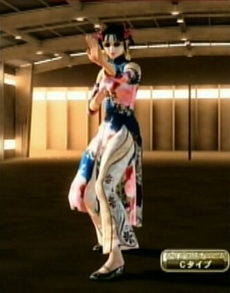
パイに関して《リリアン女学園 編》で「苦手」だと書いた。パイについてコスプレを考えるにあたり、まず、「京劇メイク」をさせた上で、そこに衣装を素直に合わせてみた。 それでも何かが足りないと思い、サングラスを試したところ、それが私の苦手な宇宙人像「グレイ」を思い出させるので、私のパイに対する苦手さを表現するためにはちょうどいいと、このイメージを固定した。 名は、「パールパーティーバングル」を最初、「パールバティーバングル」と読み間違えて、そういや、『３×３ EYES』のパイはパールバティと言ったなぁ…と思い出し、ただ、パールバティそのままでは失礼かと思い、「グレイ」を足した名にした。 飛行機がない時代も「UFO」みたいなものはあったと思う。それが開発中の兵器「凧」「花火」かもしれない…とかいうのも現代と似た感じで。でも、今と違って証拠写真すらないのだから、そういうことがあるということすら他者に信じさせるのは難しかったろう。《七曜 編》の続き的には、そういったものを表す「コスプレ」ということになろうか。 名前: ParvatiGrey 素体: パイ Cタイプ 髪、帽子: 編み輪ヘアー 額: 梅の花の髪飾り メガネ: イエローサングラス 耳: 黄色の羽根ピアス 鼻、口: 京劇メイク 手首: パールパーティーバングル 手: ルビーネイルアート アウター: ブルーローズチャイナドレス パンツ: 菖蒲柄白中華フレアパンツ 足: ブラックパーティーシューズ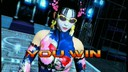
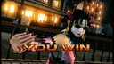
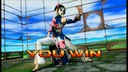
■ワシントン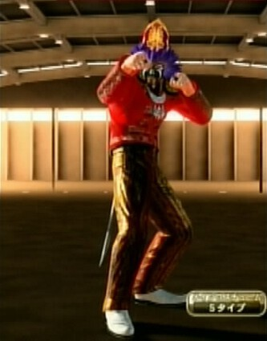
ブラッドの使うキックボクシングと言えば、ムエタイのタイ。ストIIのサガットあたりを作りたかったが、禿げ頭がブラッドでは使えず断念した。 そんなとき「ロイヤルマスカレードハット」を見て、東南アジア系でこういう衣装ってあるな…と思い、組み合げていったのがこの「コスプレ」。そういうつもりだったのに、衣装が闘牛系になったというのはどういうことなの？ この名は、たまたまこのころ「ワシントンで大麻解禁」というニュースを見て、アジアには大麻系を使う文化みたいなのがあるという話も聞いていたので、必ずしも大麻系とは限らないが、そういうトランスによる幻視が熱帯ではこういう形になるのではないかという連想からこう名付けた。 一方の日本では、大麻系の包括規制のニュースがあり、2ch の管理者が薬物の情報を放置した幇助の疑いで書類送検されるニュースがあった。 勝手な推理だが、現代、麻薬を使っていいのは医者だけだが、昔は、宗教行事など特別なときだけ認める、特定の宗教が管理するみたいな規制の在り方もあったのだと思う。現代の先進国は新興宗教ウェルカムという建前だから、そういう規制の緩め方は難しい。 『峰不二子という女』にもチラとそういった話が出てきたが、案外、現代も、新興宗教やマルチ商法あたりのカルト組織が「新薬」をリアリティある利益機会としているとかもありえなくはない。(参→[cocolog:72224721]の麻薬関連部分。)が、過去の幻視統制の蓄積みたいなのをスッ飛ばして、合法化か包括的禁止しかないというのもバランスを欠いてるなと思う。 幻視は夢みたいなものだけどそれを現実に取り出せば負のエントロピーみたいなものを消費するとかいうことで、リソースの統合法みたいなのが必要なのかもしれない。ある種の快楽を求めてなされる向こう側、そういう「異次元」からの使者みたいなのが《七曜 編》的意味になるか。統合された幻視に共通して見える実在しない「天体」といったところ。 名前: Washington 素体: ブラッド Sタイプ 髪、帽子: ロイヤルマスカレードハット 肩: イエローマタドールソルダーパッド 手: 複数指輪 首: メタルプレートネックレス アウター: レッドマタドールジャケット ベルト: ベルトなし(Sタイプ) 腰: サーベル パンツ: 茶色いイラスト柄シルクパンツ 足: ホワイトパイレーツブーツ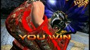
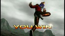
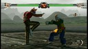
■太陽の使者のカラス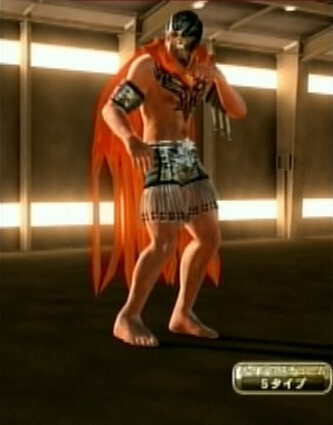
「太陽からのカラス」といった名前にしようと思ったが、スペイン語は知らないので、Suncrow で「サンクロウ」とかいうのもイメージ合わないし、 Sunbird だと雑貨スーパーの名前みたいだし…と考えた。「太陽の使者」というと新しい鉄人28号で、ちょっとカラスに似ているのはいいが、英語名では Gigantor らしく、そのままだと小柄なエル・ブレイズのイメージに合わない。「太陽の子」になるとエステバン。二つをつなげれば「小さな巨人」あたりになるかと、EstebanGigantor としてお茶をにごした。 エル・ブレイズの衣装には「アステカ」と名の付いたものが多い。私の世代だとアステカと言えば、ゲーム『太陽の神殿』で、心臓を用いた祭儀のイメージが強い。(参→[aboutme:117811])(人によってはそれより『アステカイザー』なんだろうけど。できあがったコスプレのパーツはむしろ『ガッチャマン』あたりを想定していたものかな。) 心臓は疲れを知らない。全身が心臓のようになることはいいことだとしたのが、「メキシカン・プロレス」のスタイルなのではないか。…と想像した。意思(交感神経系)のある種の緊張の持続による風邪の引きにくさとかを、別の者が補ってるとかないのか…とか風邪を引いたとき私は考えることがある。この「コスプレ」は、そういったことへの警告みたいな感じかな。 心臓の運動が実は、指数関数的・べき乗則的で、それは太陽の活動も同じなのだ…というのは、『歴史は「べき乗則」で動く』で読んだんだったか。《七曜 編》的には内なる宇宙、生命力からの訪問者といったところだが、今回、イメージ的には「太陽の黒点」みたいになってるのはなんでなのかな…？ 名前: EstebanGigantor 素体: エル・ブレイズ Sタイプ 髪、帽子: ブラックルードレスラーマスク 肩: オレンジエストレージャマント 上腕: ブラックフリンジアームバンド アウター: アームバンド 上半身(前): ブレストトライバルタトゥー ベルト: ゴールドヒーローベルト パンツ: ブラックフリンジハーフタイツ 足: 裸足(Sタイプ)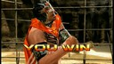
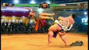
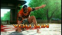
■ホワイトヘッド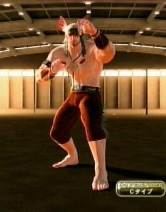
ウルフの「ドリームキャッチャーネックレス」と「赤羽根ブラウンネイティブバンダナ」がカッコイイ。でも、これらを使うには C タイプしかなく、しかも両者、動きの制限のためのポイントが大きく、これ以上に凝ったイメージにできなかった。しかたなく、レトロな感じを前に出して装備の貧しさをカバーしようとした。(このあたりの事情は上の EstebanGigantor もそんな感じなんだけど。) レトロな感じにすると、この白髪の禿げ頭がなんとも似合う。で、名前はそのまんま「ホワイトヘッド」とした。哲学者にそういう名前の人がいたという記憶があったが、アメリカのプロレスラーにもいたらしい。その人と関係させたつもりはない。 旧約聖書の雅歌にも「わたしは黒いけれども愛らしい」とあるくらいで、女性は肌が白いほうが美しいというのは、清潔さを求められる女性に対しては、一般的な美意識なんだろうと思う。 格闘技を何のためにするかというとき、動物の世界で探すと交尾のためのケンカに相当するという解釈は出てくる。「拳法家」はその解釈を否定するだろうけど、プロレスあたりになれば、あえてそういう方向性を気取る者が出てきたっていい。 「ホワイトヘッド」が、そういうことを強調するとき、白い肌と筋肉を見せるのは、肌白という美しさを守れる「頑健さ」こそ大事なのだと示しているのかもしれない。それこそ最強の首族の証なのだと。 白人コンプレックスと言われてもしかたないが、私は人間という首族がそう目指した結果が白人の西洋の「理性の勝利」ももたらしたのではないかと思うことがある。私は、帯状疱疹になったことがあって、そのヘルペスウィルスは肌の他に脳にも達すると聞いて、皮膚と脳の皮質は実は関連あるんじゃないかという疑いを持っている。肌を白くキレイにするという価値観が、実は、脳に関しても発達を促すことになったのではないかという疑いも私は持っているのだ。 この衣装は、インディアン的だが、インディアンからタバコを受け継いでおきながら、今になって社会がタバコを排除していてしまったのは、「話が違う」という感が私にはある(参→[aboutme:124531])。私はタバコを吸わないが、そこに100年1000年単位のレイシズム的排除を見る気がして怖い。 レイシズム的な物の観方は、安易な虐殺を呼びかねないもの。そういったことへの警告の意味として、この「コスプレ」は、《七曜 編》的には、天体というよりは「消えた<ruby><rb>狼煙</rb><rt>のろし</rt></ruby>」あたりに相当しようか。戦争を起こす人間には、クジャクに代表される性淘汰が向かうところとは別の「何か」をときおり思い出す必要があるのだろう。 名前: Whitehead 素体: ウルフ Cタイプ 髪、帽子: シルバー落ち武者ヘアー 額: 赤羽根ブラウンネイティブバンダナ 鼻、口: 無精ヒゲ 上腕: ブラック世紀末アームレット 手首: ブラウンフリンジリストバンド 首: ドリームキャッチャーネックレス ベルト: イエローターコイズベルト パンツ: ブラウンフリンジデニムパンツ 足: 裸足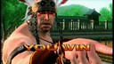
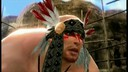
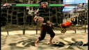
■厩戸皇子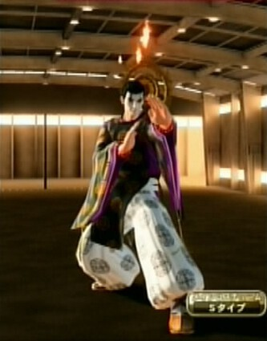
《七曜 編》を書いたあと、レイ・フェイに猿面があることを発見して、それで、「太白」っぽい衣装と考えると、この陰陽師風の衣装がマッチした。でも、それには猿面よりも、この「白塗りの化粧」のほうがしっくり来る。髭もカッコイイ。でも、キョンシーとか幽霊っぽいから、これまで使ってこなかった浮遊を使って火の玉とか使ってもおもしろそうで、これを使うならぜひ「光背」も欲しい。… でも、これも動きのポイント制限のため、ヒトダマ＆光背か、烏帽子＆髭か、どちらか選ばないといけなかった。ヒトダマ＆光背を選んだのがこの「コスプレ」で、烏帽子＆髭を選んだのが次の「コスプレ」になる。 で、こういうペアにしたとき、聖徳太子は実在しなかった論争を思い出して、こちらを厩戸皇子、もう一方を蘇我入鹿の「コスプレ」ということにした。(注：史実と違う。コメント欄をご参照あれ。) これらは、和風なんで、《七曜 編》の中でも、ゆゑやミカの系統になろうかと思う。[cocolog:74725109] で「レベルＤ」の技能者集団があって、自然科学でない政治では「レベルＣ」がせいぜいだと書いたが、この系統は「レベルＤ」というよりは「レベルＣ」の事象を象徴しているんだろうね。 その中でも、ワキとして観たい部分。景気循環的なところから変革を求める者を揶揄しているのだろうか。聖徳太子と言えば昭和のころは１万円札の肖像画だった…。貨幣の虚の部分、《七曜 編》的には「水に映った月」みたいなものだろうか。 名前: Umayado 素体: レイ・フェイ Sタイプ 浮遊: スピリットファイアー 髪、帽子: ポニーテール 鼻、口: 白塗りの化粧 肩: 中華仁王頭光 手首: 赤数珠ブレスレット アウター: 漆黒色の陰陽狩衣 ベルト: ベルトなし(Sタイプ) パンツ: 白磁色の陰陽袴 足: 茶色僧侶靴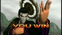
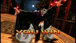
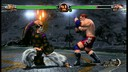
■蘇我 入鹿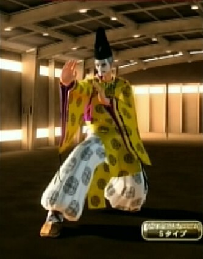
お髭がなんともイヤらしく、キュートだ。キャラが立っている。厩戸を仏教に傾倒させながら、自分は実は神道的なものを手放していないという「裏切ってる感」を「勾玉の首飾り」で表現した。 「聖徳太子は実在しなかった論」に乗れば、実は厩戸と同じ人で、厩戸は操作される人格なんだろうと思う。(ちなみに、「聖徳太子は実在しなかった論争」はイエス・キリストの実在を疑う論争のパロディ的な面もあると個人的には思うだが…。) ユング心理学で「アニマ」という概念が出てくる。男性の場合のそれは一人の女性(少女のことが多い)だが、女性の場合は、それは複数の男性像になるという。そのあたり、現代オタク文化のロリコンと BL を連想させる話なのだが、女性からの支持を集めるときに、ある種の男性同性愛を匂わせるというのは、昔からセオリーだったんじゃなかろうか。 「英雄」がいなくても社会はまわる(参→[aboutme:118046])。でも、ギルガメッシュとエンキドゥみたいに英雄が二人いるとき、その両者が引き立つのは、互いに相手が死ぬシミュレーションがあるのに、その運命を交換するなどして互いにそれを乗り超える場合なのではないか。そういった「英雄算」の一方をそもそも「死人」に充てることで、そのもう一方の自分に超人性を幻視させるのが、この「コスプレ」の入鹿の方法論なのだと私は読み込んだ。 「水に映った月」が捕えられたように見えるとしても、そこに月を移動させる力があったわけではなく、うつわをそう造っただけといったところ。《七曜 編》的には、「太陽を表す鏡」を表すといったところか。象徴をさらに象徴で広げようとする者がいること、その無益さへの警告か。 名前: Iruka 素体: レイ・フェイ Sタイプ 髪、帽子: シルバーポニーテール 額: 陰陽烏帽子 耳: エスニックピアス 鼻、口: 白塗りの化粧 顔面: 臥竜の髭 手首: 黒数珠ブレスレット 首: 勾玉の首飾り アウター: 藤黄色の陰陽狩衣 ベルト: ベルトなし(Sタイプ) パンツ: 白磁色の陰陽袴 足: 茶色僧侶靴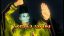
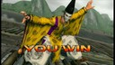
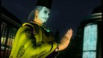
■働くジャッキー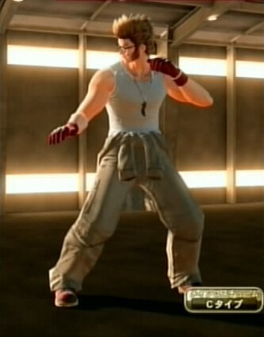
これはジャッキーの Cタイプのデフォルトのほとんどそのままなのだが、他と違ってこれに対してなぜか反発できなかった。これで良いと思った。それが少し不思議だ。 髪型と髪の色を少し変えて、めがねをかけさせたぐらいで、肝心の衣装の色はそのまま。ジャッキーから別の者にしたという感覚に致らず、WorkingJacky というひねりのない名前にした。 ジャッキーは、ジャッキー・チェンな名前なのにブルース・リーの<ruby><rb>截拳道</rb><rt>ジークンドー</rt></ruby>なのが突っ込みどころ。ジャッキーは自分の名前に反発したのかな。 《七曜 編》的には、バイク修理工だから機戒文明的といったところで人工衛星的なものの象徴なのだろうか？…むしろ、工人達が夜に離つ地上の光、「地上の星」の意味があるように思う。それは人類の夜明けの星、生活にとっての啓明なのかもしれない。 名前: WorkingJacky 素体: ジャッキー Cタイプ 髪、帽子: ブラウンライオンヘアー メガネ: まじめメガネ 鼻、口: ススこけメイク 手: ダークレッドハンドグローブ 首: ブレードオブジェクトネックレス インナー: グレーストリートタンクトップ パンツ: カーキオーバーオール 足: ブラウンワークブーツ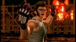
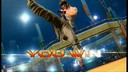
■隼人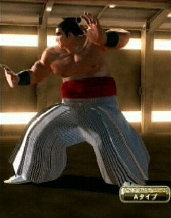
薩摩隼人がどう関係しているかは知らないが、日本では古代から隼人族という存在が知られている。名は、そこから取った。 鷹嵐は衣装が少なめで、あまり工夫できない。薩摩で鍛えたかのような黒い肌の相撲取りで、少し古さも加味したいといったところでこうなった。 黒くて強そうな姿からは、私は武蔵丸を思い出す。彼はハワイ出身の力士。大東亜共栄圏のころは、そこもアジアだとしたくて、日本人の源流を太平洋の島々と見ることもあったのだろう。そのあたり、私は邪馬台国論争を思い出す。 それは、中国の歴史書でもっとも古い日本の記述である邪馬台国が、近畿にあったか、九州にあったかという論争。道程の記述があいまいで、邪馬台国を大きく見たり小さく見たりできるというのが、「大東亜共栄圏」のノリとちょっと似ていると私は思う。 その論争、例えば、なぜ邪馬台国が中国に使者を送ったかといったところで、中国の力を借りようとしたというのもありえる話だし、逆に、中国に正定を認めてもらい、中国に力を借りようとする者を牽制したというのもありえる話…といった具合に、煙に巻く議論ができるところは、現代日本の外交にも通ずるところなのかな…と思う。 そういう地政学的配置が(きっと邪馬台国よりも)過去からあった中で、「中央」が忘れがちな源流(の一つ)を思い出させるのがこの「コスプレ」の役割といったところか。《七曜 編》的には、土星というよりは「見失いがちな土着性」、日本全体が「海に浮かんだ島」であることを象徴するのかな。 名前: Hayato 素体: タカアラシ Aタイプ 髪、帽子: 大銀杏 顔面: ごんぶと漢眉毛 手: 黒いバンテージ 肌: 常夏の肌 ベルト: 赤い腹巻 パンツ: 藤色袴 足: 雪駄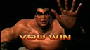
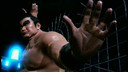
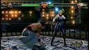
■配布物 なお、これらの「コスプレ レシピ」と画面写真をまとめたものを zip化して同人的公開物として SugarSync に置いてあります。 JRF_VF5FS_Cosplay.zip。 VF5FS は、SEGA の 2012年発売の著作物です。私自身は「レシピ」を同人で売れたりしたらいいのになぁ…即売会とかのお祭りにゲーム機とディスプレイを持ちこんで遊べないかなぁ…とか夢想しています。ただ、需要もそれほどないでしょうし、とりあえず公開したほうが愛着を持ってもらえるかと考え、無料で公開しています。ネットで公開した以上、SEGA がどういうかはわかりませんが、基本的に私としては自由に使っていただいてかまいません。 とはいえ、同人活動への色気は残しておきたいので、ダウンロード数がカウントできる SugarSync に置いています。そこに別サイトからリンクするのはいつでもこちらがリンクを切れるのでいいのですが、別サイトにアーカイブを置いての配布は、私か SEGA がいいと言わない限りやめていただくようお願いします。(私の公開自体が同人誌な勝手な公開ですので、SEGA の明示の許諾さえあれば、私は文句をいいません。) ■関連 ●VF5FS コスプレシリーズ(《リリアン女学園 編》、《七曜 編》、《その他 編》、《リリアン女学園 編２》、《イロモノ 編》、《懐かしのスター 編》)。この記事は《七曜 編》の続きみたいなものである。 ●『ソウルキャリバー４』。最初で「他のゲームのキャラクリ」というのはこのゲームのキャラクタークリエイションのこと。このブログで以前、作ったキャラを紹介している。(《バビル二世編》、《懐かしキャラ編１》、《懐かしキャラ編２》) 更新：2012-12-15,2012-12-21,2013-05-25 初公開：2012年12月21日 21:13:25 最新版：2013年05月25日 23:52:49 Comments: [E:chair] 更新：修正 「幇助の疑いで逮捕」→「幇助の疑いで書類送検」。 投稿: JRF | 2012-12-22 02:46:47 (JST) [E:night] 更新：あっちゃ。また大失敗。聖徳太子の相方の蘇我氏っていったら、入鹿じゃなく馬子、馬の子なんだから厩戸にちなんでるし、なんで間違えちゃうかなぁ…。>> 私。 もし入鹿が聖徳太子なら、親である蘇我蝦夷(馬子の子)より年上になっちゃうじゃん。しかも、入鹿は聖徳太子の子である山背大兄王を襲って自殺に追い込んでるんだからアリエネー感じ。 まぁ、でも、史実はそういうことだと私みたいに間違うわけでないなら、このページの雰囲気からすれば嘘が許されない感じでもなく、「精神病的証拠は消さないでおく」というこのサイトの方針にしたがって、注だけ付して上の記事の変更はなしにしました。 (この記事を書くキッカケは↓を読んで、Wikipedia で聖徳太子関連を調べて。) 《飛鳥の天皇たちの墓周辺がにわかに騒がしくなった理由 - 歴史ニュースウォーカー》 http://d.hatena.ne.jp/emiyosiki/20130525/p2 投稿: JRF | 2013-05-25 23:59:50 (JST)
Links: リリアン女学園 編２: http://jrf.cocolog-nifty.com/column/2012/12/post-3.html イロモノ 編: http://jrf.cocolog-nifty.com/column/2012/12/post-4.html 懐かしのスター 編: http://jrf.cocolog-nifty.com/column/2012/12/post-5.html 七曜 編: http://jrf.cocolog-nifty.com/column/2012/12/post-1.html Virtua Fighter 5 Final Showdown: http://amcvt.sega.jp/vf5fs/ (hbm) Virtua Fighter 5 Live Arena: http://virtuafighter5.jp/xbox360/ (hbm) Virtua Fighter 2: http://amcvt.sega.jp/model2/vf2.html (hbm) リリアン女学園 編: http://jrf.cocolog-nifty.com/column/2012/12/post.html ３×３ EYES: http://ja.wikipedia.org/wiki/3%C3%973_EYES (hbm) ストII: http://ja.wikipedia.org/wiki/%E3%82%B9%E3%83%88%E3%83%AA%E3%83%BC%E3%83%88%E3%83%95%E3%82%A1%E3%82%A4%E3%82%BF%E3%83%BCII (hbm) 「ワシントンで大麻解禁」というニュース: http://www.afpbb.com/article/politics/2915446/9956265 (hbm) 大麻系の包括規制のニュース: http://www3.nhk.or.jp/news/html/20121128/k10013817451000.html (hbm) 2ch の管理者が薬物の情報を放置した幇助の疑いで書類送検されるニュース: http://it.slashdot.jp/story/12/12/20/051231/ (hbm) 峰不二子という女: http://fujiko.tv/ (hbm) 新しい鉄人28号: http://ja.wikipedia.org/wiki/%E5%A4%AA%E9%99%BD%E3%81%AE%E4%BD%BF%E8%80%85_%E9%89%84%E4%BA%BA28%E5%8F%B7 エステバン: http://ja.wikipedia.org/wiki/%E5%A4%AA%E9%99%BD%E3%81%AE%E5%AD%90%E3%82%A8%E3%82%B9%E3%83%86%E3%83%90%E3%83%B3 (hbm) 太陽の神殿: http://ja.wikipedia.org/wiki/%E5%A4%AA%E9%99%BD%E3%81%AE%E7%A5%9E%E6%AE%BF_%E3%82%A2%E3%82%B9%E3%83%86%E3%82%ABII (hbm) アステカイザー: http://ja.wikipedia.org/wiki/%E3%83%97%E3%83%AD%E3%83%AC%E3%82%B9%E3%81%AE%E6%98%9F_%E3%82%A2%E3%82%B9%E3%83%86%E3%82%AB%E3%82%A4%E3%82%B6%E3%83%BC (hbm) ガッチャマン: http://ja.wikipedia.org/wiki/%E7%A7%91%E5%AD%A6%E5%BF%8D%E8%80%85%E9%9A%8A%E3%82%AC%E3%83%83%E3%83%81%E3%83%A3%E3%83%9E%E3%83%B3 (hbm) ある種の緊張の持続: http://ja.wikipedia.org/wiki/%E3%82%A8%E3%83%95%E3%82%A7%E3%83%89%E3%83%AA%E3%83%B3 (hbm) 歴史は「べき乗則」で動く: http://www.amazon.co.jp/dp/4150503583 聖徳太子は実在しなかった論争: http://homepage1.nifty.com/sawarabi/shoutokutaishi.htm (hbm) ギルガメッシュとエンキドゥ: http://ja.wikipedia.org/wiki/%E3%82%AE%E3%83%AB%E3%82%AC%E3%83%A1%E3%82%B7%E3%83%A5%E5%8F%99%E4%BA%8B%E8%A9%A9 (hbm) 大東亜共栄圏: http://ja.wikipedia.org/wiki/%E5%A4%A7%E6%9D%B1%E4%BA%9C%E5%85%B1%E6%A0%84%E5%9C%8F (hbm) 邪馬台国論争: http://ja.wikipedia.org/wiki/%E9%82%AA%E9%A6%AC%E5%8F%B0%E5%9B%BD (hbm) JRF_VF5FS_Cosplay.zip: https://www.sugarsync.com/pf/D252372_79_8912523711 その他 編: http://jrf.cocolog-nifty.com/column/2012/12/post-2.html ソウルキャリバー４: http://www.soularchive.jp/SC4/ (hbm) バビル二世編: http://jrf.cocolog-nifty.com/column/2010/10/post-1.html 懐かしキャラ編１: http://jrf.cocolog-nifty.com/column/2010/11/post-1.html 懐かしキャラ編２: http://jrf.cocolog-nifty.com/column/2010/11/post.html
後方参照 (3 件)
- URL参照 中沢新一『大阪アースダイバー』を読んだ。差別のある大阪の歴史を地理史から書いた本… 2025年05月20日
- URL参照 ポパー『開かれた社会とその敵 - 1巻(上・下)… 2024年07月10日
- URL参照 フィリップ・ポンス『裏社会の日本史』を読んだ。貧困層・被差別民・ヤクザといった日… 2016年12月23日